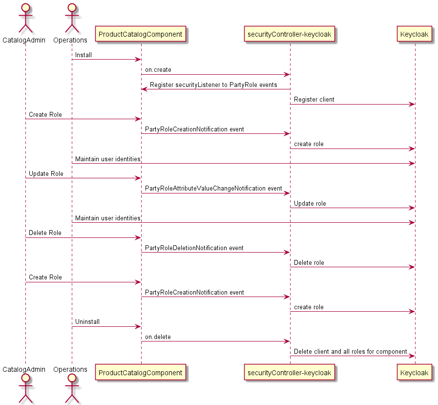
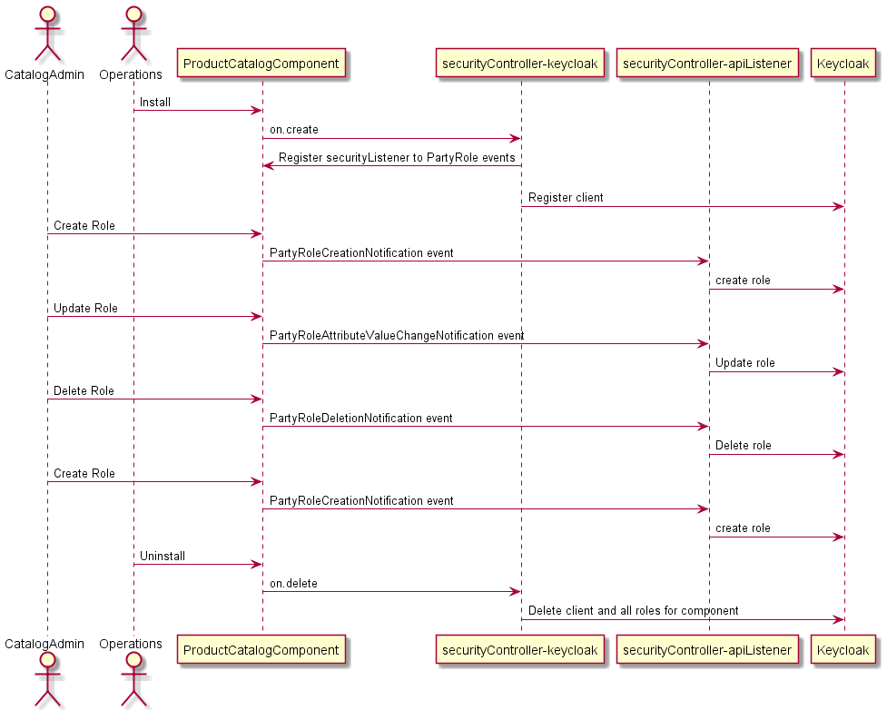

Security Operator - Introduction
This is the reference implementaiton of a security controller that takes metadata from ODA Component and uses it to automatically configure the Identity service (using Keycloak in the reference implementation). The security controller expects the component to expose a TMF669 PartyRole API detailing all the roles to be added to the identity service. The sequence diagram shows the overall flow:

The security controller consists of two modules, both written in Python. The first module uses the KOPF (https://kopf.readthedocs.io/) framework to listen for components being deployed in the ODA Canvas. It set’s up the base Client registration in Keycloak and then registers for call-back events from the components PartyRole API. The second module provides the API server where these PartyRole callback events are handled. It receives create/update/delete events and creates/updates/deletes the corresponding roles in Keycloak. See the more detailed sequence diagram below:

Notes
Keycloak setup
Realm = whole organisation Client (within Realm) = 1 App or component
Roles can be scoped at realm or client level Users can be scoped at realm or client level
Tasks to set up development environment (tested on Docker for Windows)
Install keycloak and set Environmnet variables for username and password (from https://www.keycloak.org/getting-started/getting-started-kube)
kubectl create -f https://raw.githubusercontent.com/keycloak/keycloak-quickstarts/latest/kubernetes-examples/keycloak.yaml
Keycloak is created with a Service exposed at http://localhost:8080/auth/
To run python module standalone:
Ensure url’s
kcBaseURLandprBaseURLare set correctly in keycloaktestapp.pyInstall required python modules with
pip install -r .\requirements.txtRun
python keycloaktestapp.pySet the environment variables for login to keycloak
$env:KEYCLOAK_USER = "admin"
$env:KEYCLOAK_PASSWORD = "adpass"
Configure a new realm
myrealmin keycloak.Configure a new client
r1-productcatalogin themyrealmrealm.
Interactive development and Testing of operator using KOPF
The production operator will execute inside a Kubernetes Pod. For development and testing, it is possible to run the operator on the command-line (or inside a debugger). Kopf includes a --standalone attribute to allow the operator to execute in a standalone mode. This means that the operator will run independently, without relying on any external controllers or frameworks. It is particularly useful for development and debugging purposes, as it allows you to run and test your operator locally on your machine.
Run locally in command-line:
kopf run --namespace=components --standalone .\securityControllerKeycloak.py
This mode will use the kubeconfig file (typically located at $HOME/.kube/config) to as long as kubectl is correctly configured for your cluster, the operator should work.
You need to ensure you turn-off the operator execusing in Kubernetes (for example, by setting the replicas to 0 in the operator Deployment).
The command above will execute just the Keycloak identity operator. You will also need to execute the other operators relavant for your Canvas implementation - these can be executed in separate terminal command-lines.
Note: The keycloak identity operator may have issues calling http services locally inside the cluster - for example it may try to call http://seccon.canvas.svc.cluster.local and fail as this can only be executed inside the Kubernetes cluster.